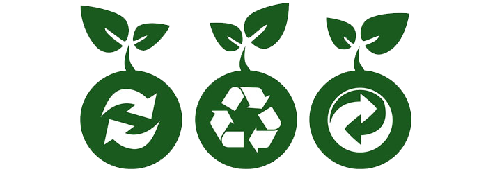

Are you into the three Rs?
The three R stands for Reduce, Recycle and Reuse our everyday waste.
Maybe you thought that throwing your garbage in the dustbin was enough, but there is a lot more that you can do!
Why sholud we all recycle?
Recycling helps to create cleaner land, air, and water, and better health.
Each year Americans generate millions of tons of waste… call it garbage, refuse, or trash… it’s the waste we produce in our homes and communities. Each of us can make a difference by reducing, reusing, and recycling materials at home and throughout our communities—and encouraging our neighbors to do the same.

Benefits of Recycling
- Conserves resources for our children’s future.
- Prevents emissions of many greenhouse gases and water pollutants.
- Saves energy: by recycling items, producers save time not to have to make something from scracth.
- Supplies valuable raw materials to industry.
- Creates jobs.
- Good For Economy: through recycling, you will grow the demand for recyclable items, in return growing the economy.
- Reduces Global Warming: recycling uses emits less carbo than making something from scratch.
- Stimulates the development of greener technologies.
- Reduces Landfill Usage: recycling reduces the amount of waste we end up sending to landfill sites, reduces the need for incinerators.
- Preserves Natural Resources: rather than using our natural resources, we utilise resources that is already available.
How can I recicle?
- Buy recycled products: we create an economic incentive for recyclable materials to be collected, manufactured, and marketed as new products.
- Composting:Composting is nature’s way of recycling organic waste into new soil, which can be used in vegetable and flower gardens, landscaping, and many other applications.
- Clasifying your garbage, separating paper, plastic and glass from organic.
- Using recovered material, it generates less solid waste.
How can I reuse?
- Use durable coffee mugs.
- Refill bottles.
- Reuse boxes.
- Purchase refillable pens and pencils.
- Participate in a paint collection and reuse program.
- Use cloth napkins or towels, instead of paper.
- Donate old magazines or surplus equipment.
- Turn empty jars into containers for leftover food.
How can I reduce?
- Purchasing durable, long-lasting goods.
- Seeking products and packaging that are as toxic free.
- Redesigning products to use less raw material in production, have a longer life,
or be used again after its original use.
Let´s not forget how important is to Donate!
One person's trash is another person's treasure.
Instead of discarding unwanted appliances, tools or clothes, try selling or donating them. Not only will you be reducing waste, you'll be helping others. Local churches, community centers, thrift stores, schools and nonprofit organizations may accept a variety of donated items, including used books, working electronics and unneeded furniture.
Benefits of Donation : Prevents usable goods from going into landfills. Helps your community and those in need. Tax benefits may be available.